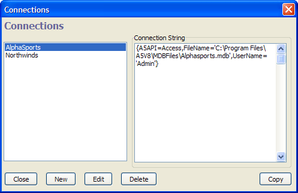

Connections Dialog
The Connections dialog allows you to define a connection with an ADO or SQL back-end database. To open the Connections dialog:
from the Control Panel select Tools > External Databases > AlphaDAO Connection Strings
from the Control Panel select Tools > External Databases > ADO Connection Strings.
from the SQL Command Window select SQL Command > Manage Connection Strings...
from the Grid Builder display the Query page and select Add/Edit Saved Connections
from the Configure Datasource dialog click Edit Named Connection Strings

To create a new connection string:
Click New to display the New Connection dialog.
Enter a descriptive name in the Connection Name control.
Optionally, enter a connection string into the Connection String control and click OK.
Optionally, click Build. If you are using AlphaDAO to connect to a SQL back-end database, you will see the Create SQL Connection String dialog. If you are using ADO to connect to a database, you will see the Windows Data Link Properties dialog.
Click OK to save the new connection string.
Limitations
Desktop applications only.
See Also
Create SQL Connection String Dialog